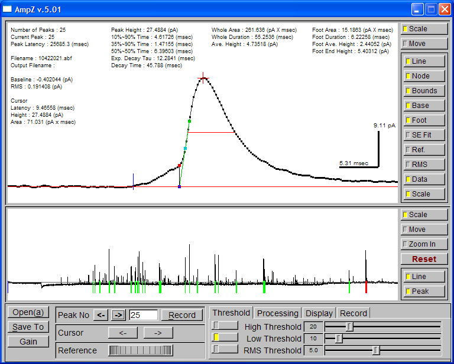

AmpZ
Introduction
AmpZ analyzes amperometry data collected by Axon pClamp program.
Snapshot

Publications Using AmpZ
- Release mode of large and small dense-core vesicles
specified by different synaptotagmin isoforms in PC12 cells.
Zhang Z, Wu Y, Wang Z, Dunning FM, Rehfuss J, Ramanan D, Chapman ER, Jackson MB.
Mol Biol Cell. 2011 Jul 1;22(13):2324-36.
- Syntaxin requirement for Ca2+-triggered exocytosis
in neurons and endocrine cells demonstrated with an engineered neurotoxin.
Wang D, Zhang Z, Dong M, Sun S, Chapman ER, Jackson MB.
Biochemistry. 2011 Apr 12;50(14):2711-3.
- Regulation of exocytosis and fusion pores by synaptotagmin-effector
interactions.
Zhang Z, Hui E, Chapman ER, Jackson MB.
Mol Biol Cell. 2010 Aug 15;21(16):2821-31.
- Membrane bending energy and fusion pore kinetics
in Ca(2+)-triggered exocytosis.
Zhang Z, Jackson MB.
Biophys J. 2010 Jun 2;98(11):2524-34.
- Synaptotagmin IV modulation of vesicle size and
fusion pores in PC12 cells.
Zhang Z, Zhang Z, Jackson MB.
Biophys J. 2010 Mar 17;98(6):968-78.
- Phosphatidylserine regulation of Ca2+-triggered
exocytosis and fusion pores in PC12 cells.
Zhang Z, Hui E, Chapman ER, Jackson MB.
Mol Biol Cell. 2009 Dec;20(24):5086-95.
- Temperature dependence of fusion kinetics and
fusion pores in Ca2+-triggered exocytosis from PC12 cells.
Zhang Z, Jackson MB.
J Gen Physiol. 2008 Feb;131(2):117-24.
-
Secretory carrier membrane protein SCAMP2 and phosphatidylinositol 4,5-bisphosphate interactions in
the regulation of dense core vesicle exocytosis.
Liao H, Ellena J, Liu L, Szabo G, Cafiso D, Castle D.
Biochemistry. 2007 Sep 25;46(38):10909-20.
- Structural transitions in the synaptic SNARE complex
during Ca2+-triggered exocytosis.
Han X, Jackson MB.
J Cell Biol. 2006 Jan 16;172(2):281-93.
- Synaptotagmin-Ca2+ triggers two sequential steps
in regulated exocytosis in rat PC12 cells: fusion pore opening and fusion pore dilation.
Wang CT, Bai J, Chang PY, Chapman ER, Jackson MB>.
J Physiol. 2006 Jan 15;570(Pt 2):295-307.
-
SCAMP2
interacts with Arf6 and phospholipase D1 and links their function to exocytotic fusion pore
formation in PC12 cells.
Liu L, Liao H, Castle A, Zhang J, Casanova J, Szabo G, Castle D.
Mol Biol Cell. 2005
Oct;16(10):4463-72.
- Electrostatic interactions between the syntaxin
membrane anchor and neurotransmitter passing through the fusion pore.
Han X, Jackson MB.
Biophys J. 2005 Mar;88(3):L20-2.
- Fusion pore dynamics are regulated by synaptotagmin*t-SNARE
interactions.
Bai J, Wang CT, Richards DA, Jackson MB, Chapman ER.
Neuron. 2004 Mar 25;41(6):929-42.
- Transmembrane segments of syntaxin line the fusion
pore of Ca2+-triggered exocytosis.
Han X, Wang CT, Bai J, Chapman ER, Jackson MB.
Science. 2004 Apr 9;304(5668):289-92.
-
Interpretation and optimization of absorbance and fluorescence signals from voltage-sensitive dyes.
Chang PY, Jackson MB.
J Membr Biol. 2003 Nov
15;196(2):105-16.
-
Mutations in the effector binding loops in the C2A and C2B domains of synaptotagmin I disrupt
exocytosis in a nonadditive manner.
Wang P, Wang CT, Bai J, Jackson MB, Chapman ER.
J Biol Chem. 2003 Nov
21;278(47):47030-7.
-
Different domains of synaptotagmin control the choice between kiss-and-run and full fusion.
Wang CT, Lu JC, Bai J, Chang PY, Martin TF, Chapman ER, Jackson MB.
Nature. 2003 Aug 21;424(6951):943-7.